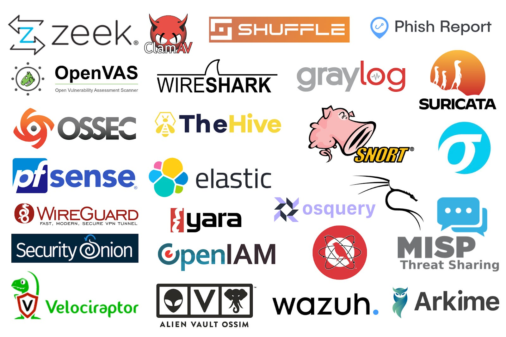

Hi! My name is Jacob, and I am a Cybersecurity Major at Illinois Tech. I am passionate about Blue Team security operations including SIEM monitoring, vulnerability assessment, and incidence response.
This website serves as an overview of my academic background, technical projects, industry certifications, and practical IT experience. Browse through the navigation above to see more.

I have built and configured SIEM and Extended Detection and Response (XDR) environments using Wazuh and Splunk. My work involves monitoring endpoints, setting up intrusion detection triggers, capturing Indicators of Compromise (IOCs), and analyzing traffic patterns for cyber attacks.
I work tier 1 IT Helpdesk at my university. There I troubleshoot software, hardware and network issues, map printers, and unlock accounts/reset passwords.
I perform offensive security simulations using Kali Linux, Nmap, Metasploit, and Hydra. These exercises test systems against known Common Vulnerabilities and Exposures (CVEs) within the framework of MITRE ATT&CK guidelines to strengthen defensive security controls.
My ambition is to secure a full-time role as a SOC Analyst, Threat hunter, or Security Engineer after I graduate. I enjoy learning and practicing cybersecurity both in and out of class.